4. Textures and Materials

4.1
Textures
Textures define the surface properties of 3D objects such as the
colour, reflectivity, transparency, bumpiness etc. There are 4 types of
texture in Art of Illusion: uniform, image-mapped, procedural 2-D
and procedural 3-D. These are all described in detail below. Select Scene->Textures
to define a new texture or to edit one you have already created. This
brings up the following dialogue box:
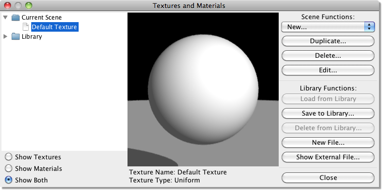
The folders on the left list the textures and materials
in the current scene, as well as those in the texture library that comes with AOI.
In the middle of the window is a preview of whichever texture or material is
currently selected, and on the right are controls for editing the textures and
materials. Most of these are self explanatory. The controls under "Scene Functions"
are for working with the textures in the current scene. You can create a new
texture, create a duplicate of an existing texture, delete the selected texture,
or edit the selected texture. The controls under "Library Functions" are for
working with the library. You can copy a texture from the library to the current
scene (with Load from Library) or from the current scene to the library
(with Save to Library), delete a texture from the library, or add a new
file to the library. You also can copy textures between the library and the current
scene by dragging them between folders. Show External File is useful for copying textures
and materials between files. When you select this command, it prompts you to
select an AOI scene, which then appears on the left of the window as if it were
part of the built in library.
Once textures have been defined, they can be assigned to any 3-D object
and can be mapped in a desirable
way by altering their scaling, orientation and position relative to the
object. Textures can also be
layered to simulate complex real-world surfaces.
4.1.1 Uniform Textures
Uniform textures are the simplest kind of texture in Art of Illusion.
They apply the various surface properties
uniformly to the whole object. To create a new uniform texture, Click
on Scene -> Textures and select Uniform texture
from the New... menu. This will bring up a dialogue box
similar to the one below:
| 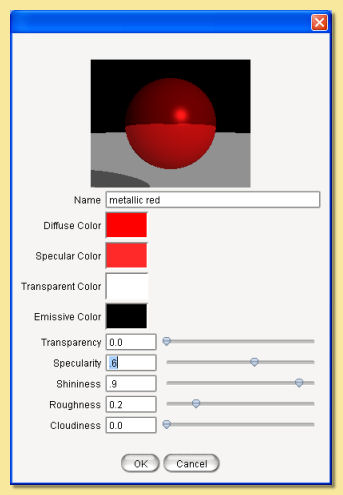 |
A rendered sphere at the top of the dialogue shows
the current texture
mapped to a sphere. Double-clicking over the preview will display a
pop-up menu as shown on the right:
This allows the view to be changed and the 3D object used for the
preview to altered.
The preview can also be zoomed via holding CTRL while dragging up and
down with the right mouse button
and panned by dragging the right mouse button.
|
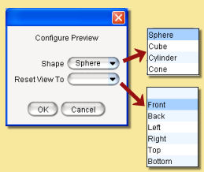 |
Below this are the various properties that can be
changed. There are 4 colours that can be defined. Simply click on the
colour bar to the right of each colour property. This will bring up the
colour chooser dialogue shown on the right.
Colours are
defined through this dialogue using one of 3 Color Models:
Hue, Saturation and Value
(HSV), Red, Green and Blue (RGB) or Hue, Saturation and Lightness
(HSL). Each colour component can be set to a value according to the
selected Component Range (0-1 or 0-255).
Recent colours are also available for selection via the
palette at the bottom.
The 4 colour properties are:
|
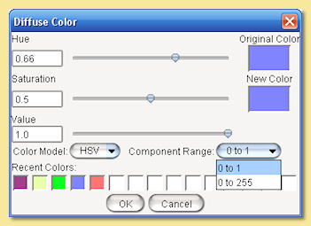 |
|
Diffuse Colour
This is the basic underlying colour of the object. In the absence of
any other properties, the object looks this colour.
Specular Colour
Specularity is the 'shininess' or reflectiveness of the object. The
colour specified here defines which
colour is reflected by the object. Note, however, that this has no
effect unless the specularity value
is greater than zero (see below).
Transparent Colour
If the transparency of the object is greater than zero, then this
colour is that which is transmitted when
light passes through the object (see below).
Emissive Colour
This property is used to simulate glowing objects. This is the colour
that is emitted by the object.
Some examples are shown below. In these examples, the Hue and
Saturation of the diffuse colour were
used for the Emission Colour with varying amounts of Value. Note that
the quantity of emitted light is directly related to the Value in the
HSV colour, and hence the HSV colour model is probably the most useful
for this surface property.
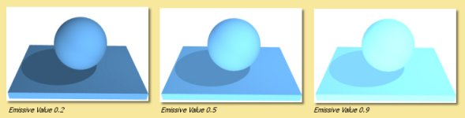
Below the colour properties are 4 numerical quantities with slider bars
to define their values.
Transparency is the degree to which the object
transmits light. A value of 1 means the object is completely
transparent and 0 is completely opaque. The images below show objects
with a transparency of 0.5. The
effect of varying the Transparent Colour is
illustated. Normally an transparent object will
transmit light of a colour similar to its diffuse colour but in
computer graphic imagery we are not
limited to physical reality.
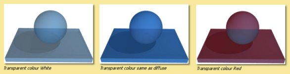
Specularity is the
reflectiveness of the object. A value of 1 means the object is
completely reflective
and thus the diffuse colour will not be visible. A value of 0 is
completely non-reflective.
The images on the right show objects all with a specularity of 0.3 and
show the effect of varying the
Specular Colour.
Plastic type objects normally reflect virtually white light whereas
metallic objects
tend to reflect light that is tinged with the object's diffuse colour.
In the examples here, the Hue and
Saturation of the diffuse colour has been used as the specular colour
with varying amounts of Value and
compared with a 'plasticky' white specularity.
|
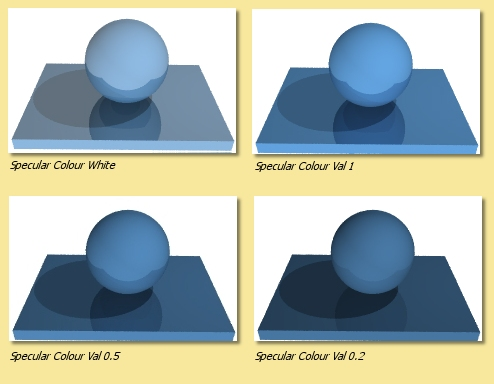 |
In addition to specularity is Shininess which
controls the intensity of specular highlights. Although 'Shiny'
surfaces in real life are due only to specularity, the shininess
parameter is useful to fake some types of effect such as shiny plastic
surfaces without much obvious reflection. In most cases,
you will want to have both specularity and shininess.
Below are examples of different
shininess values with and without specularity.

Roughness This parameter can be used to mimic the
real life effect that the roughness of a surface decreases the
sharpness of reflections. Large Roughness values result in more blurred
reflections and more widespread specular highlights as shown below.
Note that Gloss/Translucency needs to be enabled during rendering with
the raytracing engine
(see Rendering)
to see the effect.
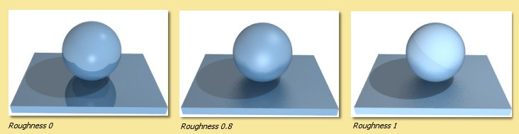
Cloudiness controls the degree of translucency
for transparent objects. Higher values cause more
blurring of transmitted light as illustrated below. As with the
Roughness parameter, Gloss/Translucency
needs to be enabled during rendering to see the effect.
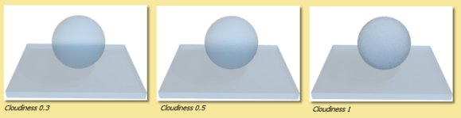
4.1.2 Image Mapped Textures
This type of texture allows you to define the surface properties based
on 2-D images. These images would
usually be created in some 2-D paint program. To create a new
image-mapped texture click on Scene->Textures and choose
Image Mapped texture from the New... menu. The
following dialogue box will be displayed:
| 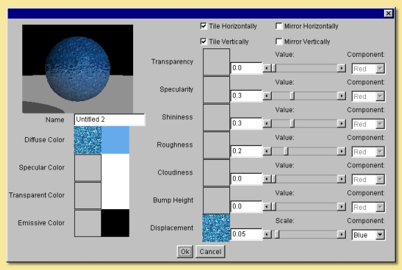 |
The
same surface properties as were described in Uniform Textures
are
also here. This time however, both the colours and the values are
determined through the choice of
2-D images. This means that the values of the various parameters vary
over the object's surface according
to the image used, instead of being uniform.
On the left of the dialogue box are the diffuse, specular, transparent
and emissive colours.
If you click on the square box immediately to the right of the text,
another dialogue box title 'Images'
appears. Click Load to read in a new image. The
image can be in .jpg, .png, .gif, .svg, or .hdr format. Simply
find the image and click on 'Open' to get the image. A thumbnail of
this image is then displayed in the
'images' dialogue box and is automatically selected (shown by being
enclosed by a black square). If other
images have been read in already then you can select any of them by
clicking on them. Once the required
image is selected, click on Done. (If you wish to
have no image selected, click on Select None).
Note that there is also a uniform colour box next to the image box. The
colour specified here modifies
the colours of the image map uniformly.
As with the uniform
texture dialogue, double-clicking on
the preview displays a menu from which the view and preview object can
be changed and the preview
can be zoomed (CRTL and RMB drag up/down) and panned (RMB drag). |
The images below right right show the effect of applying an image map
to
the various property colours. The image map itself is shown below left:
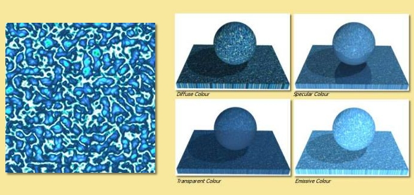
On the right hand side of the image map dialogue are the numerical
properties. The properties Transparency,
Specularity, Roughness and Cloudiness
that were available with Uniform Textures are also here but, in
addition, are two different properties; Bump Height
and Displacement. These control the
'bumpiness' of the surface. Bump mapping varies the surface normals to
simulate bumps in the geometry, whereas
Displacement mapping actually changes the surface geometry.
For Image Mapped textures, the amount of transparency, specularity etc.
is defined by the image map selected by clicking on the square box next
to the text. If no image is selected, a uniform value can
be specified using the sliders. If an image is selected, the property
varies across the surface
according to the image. You can choose whether the Red,
Green or Blue values are used to
control the various parameters by selecting the appropriate Component
on the right of the dialogue. For images with information in an alpha
channel or which contain transparent regions (of the supported image
types, .png, .svg, and .gif support transparency), an additional component
named Mask is
also
available for selection in the component list. This can be used to
apply effects to particular parts
of the surface only, e.g. only parts of the image within an alpha
selection can be made to be shiny etc.
The Mask output can also be used to apply surface properties depending
on the transparency in the
image. The most obvious example would be to use it in the Transparency
property where transparent parts of the image would then act as
transparent regions in the texture (see example below). However, the
mask can be applied in any of the properties for other effects.
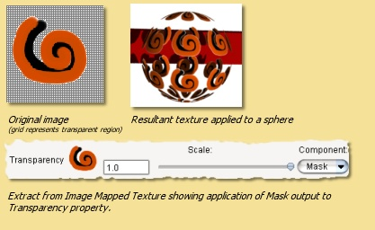
The slider bars then change to control the 'Scale' of the effect. In
this way, you can make only some parts of
the surface transparent, shiny etc. Some examples are shown below:
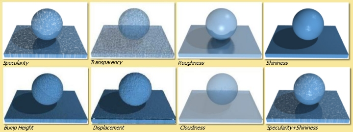
The image map dialogue also allows you to tile images (on by default)
so that the entire surface of the
object can be covered if the image is smaller than it and to mirror the
image in either axis.
Images used for textures can
be managed directly through Scene -> Images.
This allows
images to be loaded, saved or deleted.
4.1.3 Procedural Textures
Procedural textures are those in which the various properties described
above are defined by mathematical
algorithms. There are two types of procedural texture in Art of
Illusion: procedural 2D and procedural 3D
textures. The 2D textures are essentially thin sheets of texture that
are wrapped around the object in
a way defined by the mapping (see 4.1.4).
Procedural 3D textures on the other hand are 'solid' textures
and objects assigned to them will look as if they have been 'carved'
out of it.
The graphical interface for defining both types of procedural texture
are however identical so both will be described in this section.
To define a new procedural texture click on Scene ->
Textures and choose Procedural 2D texture or Procedural 3D texture
from the New... menu. The following window is then
displayed:
| 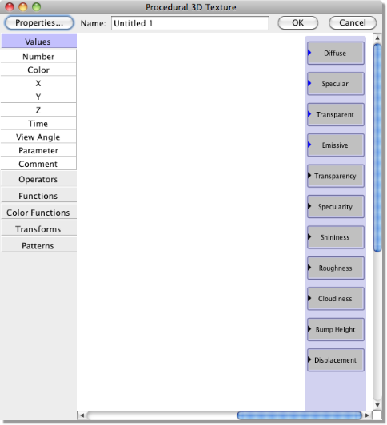 |
A
preview window is also displayed showing the current texture applied
to a sphere.
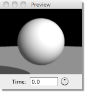
This preview
window automatically updates as the texture
is built up. The size of this
preview can be altered by dragging the sides of the preview window
frame and the preview can be zoomed
(CTRL drag with RMB) and panned (drag with RMB).
As with the uniform
texture dialogue, double-clicking on
the preview displays a menu from which the view and preview object can
be changed.
The preview can also be used to view the texture at a predefined time -
useful for textures that vary with time (see example below).
To start with, the preview shows a uniform white texture as this is the
default. Please note, however, that 2D textures are shown using
projection mapping (link to mapping section), whereas 3D textures are
shown using linear mapping. Thus, the same procedural texture might
look different for the 2D and 3D preview. All the following examples in
this section have been created using 3D procedural textures. As an
exercise, you might want to check if they look different for a 2D
procedural texture, and if it's the case, why.
The boxes at the right hand side of the procedural texture editor show
the surface texture properties
that were described above for the other type of textures. The idea of
the procedural texture editor is to
pass values (either colours or numbers) into the relevant property
boxes. This is done by inserting values,
functions and transforms and connecting them to the property boxes.
This produces a set of values
which are calculated for each point on the surface thus creating the
texture.
|
Along the left side of the window is a menu of 'modules'
that can be added to the procedure. They are organized into categories,
such as Values, Operators, Functions, etc. Click on any category to expand it
and see the modules it contains.
Let's take a simple example: a uniform diffuse colour. Make sure the Values
category is expanded, then click on Color, or alternatively press the
mouse on Color and drag onto the blank texture 'canvas'. A small
square appears which looks like 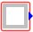.
To apply this colour, connect it to the Diffuse colour box by clicking
on the blue solid arrow on the end
of the 'color' box, hold the mouse button down, drag to the blue arrow
on the Diffuse box and let go. A
line should now be displayed connecting the 2 boxes 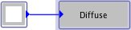. The preview window
will be unchanged since the colour
in the 'Color' box is white by default. Double-click on it and the
colour chooser dialogue will be displayed. Select the colour of choice
and click on OK. The preview window will now show the new uniform
diffuse colour texture.
Each of the values, functions etc. modules selected from the menu
has at least one output (shown
as arrows pointing outwards) which is either a colour or a number; blue
arrows indicate colours, black
arrows are numbers. To be precise, the outputs are a set of values
representing the colour or value at each point on the surface. Most
also have at least one input value which are shown as arrows pointing
inwards.
Let's try something slightly more complicated: a gradient across the
surface. Click on the 'Color' box
and press delete to remove it. This time, click on the
Color Functions category to expand it, then drag a Custom module
onto the canvas. This
produces a colour map 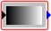.
Connect the output of this to the Diffuse property
box. The preview now shows a black sphere. This is because the colour
chosen from this colour map depends
on the input black solid arrow of this box. If you click and hold on
this arrow, you will see that it
says Index (0) meaning that the colour map function requires an index
and the default for this is 0 which
corresponds to black in the colour map. To get a gradient, we need the
colour selected from this map to
vary according to its spatial position. So, if the gradient is going to
run in the X direction, we need
to input X to the colour map box. Expand the Values category and
insert an X module. The output from this box
is the x value of each particular point on the
surface. Connect this output to the input of the colour map and the
preview window will now show a gradient as shown below:
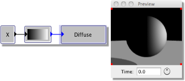
If we
had connected a Y box to this, we would have
got a gradient in the y-direction. What if we wanted
a gradient diagonally? In this case, we need to feed (X+Y)
to the input of the color map. Select both
X and Y from the Values menu. To
perform an addition, we need to insert an Add module from the
Operators category. Then connect the outputs of the X
and Y boxes to the input arrow of the Add box,
and the output of the Add box to the input of the
color map as shown on the right:
There is another way we could have achieved this. Under the Functions
category is a powerful
function called Expression. Select this and
double-click on it. This function allows the entry of any
mathematical expression of x,y,z, time and the box inputs. Enter 'x+y'
in the box and click OK. Connect
the output of this box to the gradient and the same effect is achieved.
This is also shown on the right: |
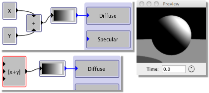 |
Let's look now in more detail at the values, functions and transforms
available.
Values
This is the Values menu.
| 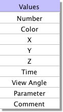 |
Most
of the entries here are self-explanatory:
Number inserts a box with a single constant
number. Double-click to change the value.
Color inserts a single constant colour box.
Double-click to bring up the colour chooser dialogue
to change the colour.
X, Y and Z simply bring up boxes with the
x,y,and z values at each point on the surface. For
procedural 2D textures, Z is zero.
Time This inserts a box, the output of which
is the time value. In animations, this value
will change and thus textures, themselves, can be animated.
|
View Angle
This module can be used to vary surface properties of an object
depending on the angle between the camera and the point on the surface.
It has uses in simulating
Fresnel effects where the specularity is less at near normal angles of
incidence and increases at glancing angles. The View Angle
module outputs the Cosine of the angle of incidence and the example
below shows how it can be used to generate a Fresnel effect: In this
example, the procedural texture shown below left was used to make the
left vase more 'plasticky' by enhancing reflections at glancing angles.
The metallic vase on the right has a higher specularity which is also
applied uniformly.
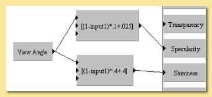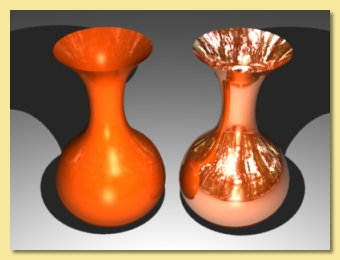
This module has many other uses, one of which is a simple 'toon'
texture as shown below:
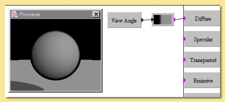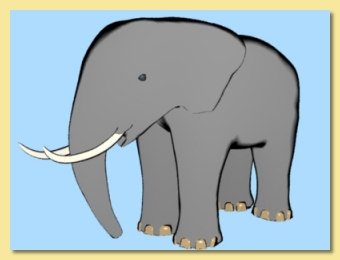
Parameter This allows textures to be dependent on
user-defined parameters which can be specified
when mapping the texture indivually for objects and even for particular
parts of objects. See Texture
Parameters for more details.
Comment
Thus module is purely a text box allowing comments to be placed in the
procedure, e.g. to describe parts of the procedure as shown in the
example below:
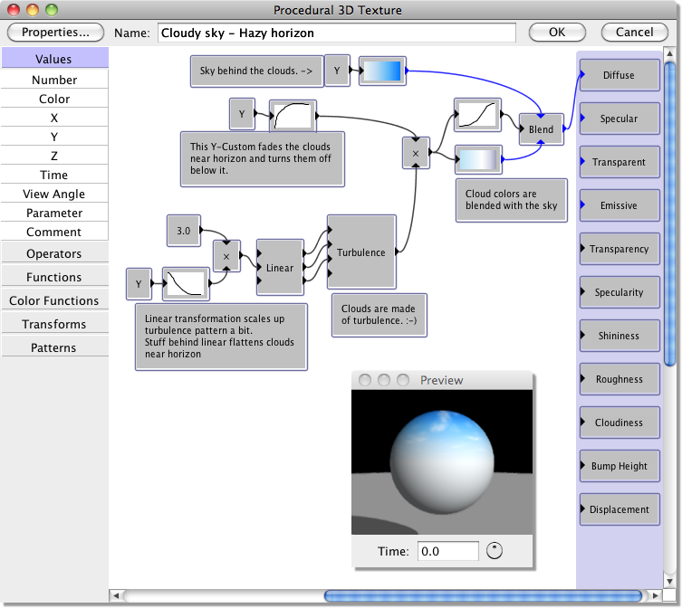
Operators
This is the Operators menu.
| 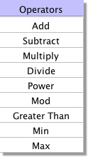 |
These are standard mathematical operators:
Add, Subtract, Multiply, Divide These boxes
each have 2 inputs which are added, subtracted
(bottom input from top input),multiplied together or divided (top
divided by bottom) depending on the
operation selected.
Power The output of this is the left input to the
power of the exponent (top input).
Mod has 2 inputs, the dataset to be operated on and
a Modulus value. It returns the remainder
of dividing the dataset input by the Modulus, e.g if the input was 5
and the Modulus was 4, the output
would be the remainder of dividing 5 by 4 which equals 1.
Greater Than returns 1 if the top input is
greater than the bottom and 0 otherwise.
Min, Max Both of these have 2 inputs. They are
compared and the minimum or maximum respectively
is returned as the output.
|
Functions
This is the Functions menu.
| 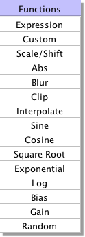 |
These
entries are applied to numerical values to modify them in various
ways:
Expression allows the entry of any
mathematical expression of x, y, z, t (representing
time) and any of 3 inputs to the box. The inputs are identified as input1,
input2 and input3.
Expressions can use the following mathematical operations:
+,-,/(division),*(multiplication),
^(to the power of),%(modulus) and can contain
the following functions: sin(a): sine of a, cos(a):
cosine of a, sqrt(a): square root of a, abs(a):
absolute value of a, log(a): natural logarithm of
a, exp(a): e to the a power (same as e^a), min(a,
b): minimum of a and b, max(a, b):
maximum of a and b, pow(a, b): a to the b power (same
as a^b), angle(a, b): the angle formed by a right triangle with sides a and b,
bias(a, b): the Bias function with a bias of b, gain(a, b):
the Gain function with a gain of b.
The constants, pi and e are
also recognised.
Custom allows a curve to be drawn relating the
output to the input. New points can be added by <ctrl>
clicking on the graph and existing points can be moved by clicking and
dragging. The curve can be smoothed
by checking the appropriate box. In addition, the function can be made
periodic, i.e. it repeats itself
forever outside the 0-1 range. Otherwise, input values less than 0
produce the same output as an input of 0
and input values greater than 1 give the same outputs are input values
of 1.
Scale/Shift multiplies the input value by a
constant value and adds an offset value. Double-click on
the box to alter both these values.
Abs returns the absolute value of the input,
i.e. if the input is greater than 0, there is no
change, if the input is negative, the positive value is returned (e.g.
-5 becomes +5).
Blur Produces a blurring effect. There are 2
inputs: one is the set of values that you want to apply the operation to,
the other is a value defining the amount of blurring. More accurately,
this second value is the range
over which the smoothing is performed.
Clip This function limits the input to be
within a range specified by double-clicking the box.
Input values between the limits are unchanged, values less than the
minimum are set equal to the minimum,
and inputs greater than the maximum are set equal to the maximum.
|
Interpolate outputs a value based on 3 inputs. Value
1 and value 2 (top and bottom inputs)
specify the maximum and minimum and the fraction input determines the
value between the min and max.
For example, if the fraction was 0.5, the output would be half-way
between the extremes, if it was
0.25, the output would be a quarter of the way between them etc.
Sine, Cosine, Square Root, Exponential, Log These
are straightforward mathematical expressions with
a single input and output. The inputs for Sine and Cosine are in
radians. The Log module is a natural
(i.e. to the base e) logarithm.
Bias This module calculates Ken Perlin's Bias
function. Given an input value between 0 and 1, it calculates an output
value which is also between 0 and 1 according to: y(x) =
x^(log(B)/log(0.5)) where the input value x and bias B correspond to
the two input ports. If B=0.5, then y(x)=x. Values of B less than 0.5
push the output toward smaller values, while values of B greater than
0.5 push the output toward larger values.
Gain This module calculates Ken Perlin's Gain
function. Given an input value between 0 and 1, it calculates an output
value which is also between 0 and 1 according to: y(x) = Bias(2*x,
1-G)/2 if x<-1.5 1-Bias(2-2*x, 1-G)/2 if x>-1.5 where the
input value x and gain G correspond to the two input ports, and Bias(x,
B) is the Bias function described above. If G=0.5, then y(x)=x. Values
of G less than 0.5 smooth the input by pushing the output toward 0.5,
while values of G greater than 0.5 sharpen the input by pushing the
output toward 0 or 1.
Random This is a one-dimensional random noise
pattern. It has 2 inputs, one of which is the
dimension over which the random noise is applied and the other is the
amount of noise. The input
dimension is time by default as this function is
most commonly used to vary position/rotation during
an animation. This function could, however, be used to create random
patterns in space or, indeed, to
apply random variations to texture patterns. Also, similarly to some of
the Patterns described
below, double-clicking the Random module allows the Amplitude and
number of Octaves to be specified. See
the description of the Noise
pattern below for more details of these parameters.
Color
Functions
This is the Color Functions menu.
| 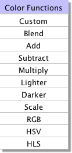 |
These
functions are used to create or change colour values in various
ways:
Custom
As we have already seen, this is used to creat colour maps from which
colours are selected depending on the input numbers. The default colour
map has black at one end and white at the other. Double-click on the
colour bar box to edit it as shown on the right. To change a colour,
click
on the small arrow beneath it on the bar - the arrow will turn red to
show it is selected. Then click on
the colour square which will display the colour chooser dialogue to
enable a new colour to be selected.
Colours can be added to the colour map by clicking on Add.
This creates a new arrow on the bar which
can be coloured as required. The positions of the colour along the bar
can be altered either by dragging
the arrows to the required place or by entering a number between 0 and
1 into the Value box. The
colour map can be made periodic by checking the appropriate box. This
means that the colour map repeats
itself indefinitely for all points on the surface. If not selected,
then parts of the surface outside
the map will be a uniform colour the same as the appropriate end of the
colour bar.
|
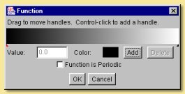 |
|
| Blend
is another way of defining a colour from
a range. It takes 2 input colours and blends them
according to the numerical input. The important difference between this
and the custom colour function is
that the colours are inputs are can thus be created by other functions.
This is a simple example where one
of the colour inputs is a fixed red colour and the other is a colour
selected from a custom colour map.
The function selecting the colour from the map is simply Y so this
would create a gradient in the Y direction.
The colour selected and fed into the blend function thus varies from
white to black depending on the Y
position. This then gets mixed with red according to the X position
which is the function fed into the
Blend colour function. Obviously much more complicated functions can be
defined. |
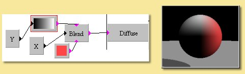 |
Add, Subtract, Multiply are simple functions that
take 2 colour inputs and perform the appropriate
mathematical operation on their RGB components.
Lighter, Darker Both these functions take 2 colour
inputs and output whichever of the 2 colours
is lighter or darker. This is determined by the luminance component of
the CIE XYZ color system.
Scale
allows the input colour to be scaled by a numerical input. Each
component of the input colour
is multipled by the input number. One somewhat hidden feature of the
colour Scale module is that
it can be used to increase properties such as Specularity, Shininess,
Transparency etc beyond their normal
maximum value of 1. This is done
by scaling the appropriate colour (i.e. Specular Color
for Specularity and Shininess,
Transparent Color for Transparency) by numbers greater than
1. The resulting property value is the
product of the scaled colour value and the Number
input to the property. An example is shown
below: In the left hand image, the Specular Color is white (i.e. Hue-0,
Saturation-0 and Value of 1) and
the Shininess is set to 1. The overall Shininess is then the product,
i.e 1 x 1 = 1. The right hand
image uses the Scale module to increase the
Specular Color Value to 20; the product is thus
1 x 20 = 20 and the result is a much (artifically) brigher specular
highlight which could, for example,
be used as a cartoon-like shiny texture.
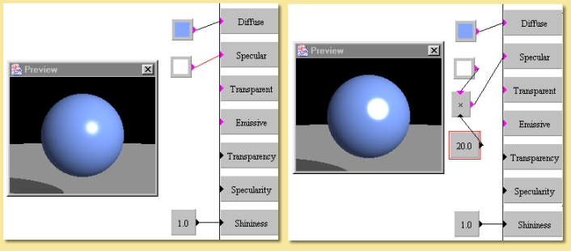
Another use is with emissive textures; the Scale
can be used in a similar way to increase the light produced by an
emissive object when rendered with Global Illumination. The image below
shows
the effect of applying the colour Scale module to
the Emissive Color; the numerical inputs
to the Scale module being 1,2,5 and 10
respectively: The image was rendered with Photon Mapping
for Global Illumination.
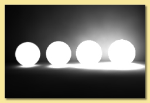
RGB This module allows Red,
Green and Blue
components to be determined via numerical inputs.
is a seemingly simple function, its power lies in the fact that the
components are inputs and can therefore
be calculated by other function combinations. In the example on the
right, the Red component is determined
from a Noise
module, the Green component is obtained from a Wood pattern and
the Blue component is
dependent on the View
Angle to the Power
of 3.
|
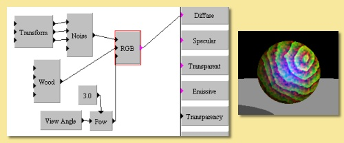 |
| HSV As with the RGB module,
this function has
3 numerical inputs; one for each of the colour components. This
time the Hue, Saturation and Value components can be controlled via
numerical inputs as shown in the
simple example on the right in which the Hue is determined by the
x-position. |
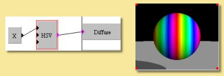 |
| HLS
As
with the previous two modules, this function has 3 numerical inputs;
one for each of the colour components. This
time the Hue, Lightness and Saturation components can be controlled as
shown on the example on the right
in which the Lightness varies sinusoidally and the Saturation is
determined from a scaled Cells
pattern. |
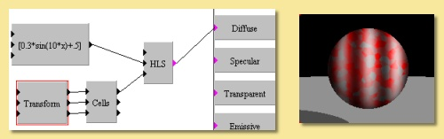 |
Transforms
The modules in this menu perform transformations on the co-ordinate
system. This is the Transforms menu:
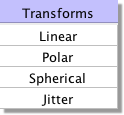
Linear
This
module allows scaling, rotation and translation of x, y or z.
Double-clicking on the
box brings up a dialogue allowing entry of the relevant transformation
parameters.
An example is shown on the right. Here is the same basic texture we had
in the HSV example above. The
X output of the linear transform is fed into the Hue component of the
HSV colour function. With the default transformation settings, this
would result in the same texture as before. However, a scaling
factor of 5 has been entered in the x column and a 45 degree rotation
has been applied in the z-axis to
produce the modified texture seen. |
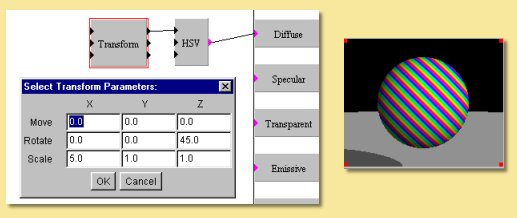 |
Polar
| 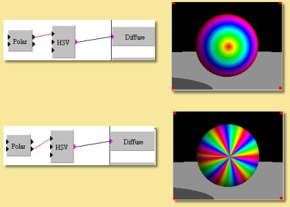 |
The
polar module transforms the linear co-ordinate system of x and y to
the polar co-ordinate system
defined by r (radial distance) and theta (angle). An example is shown
on the left.
The top example shows the result of feeding the r co-ordinate into the
Hue of the HSV function producing a pattern where the colour is the
same for points at the same distance from the centre, thereby producing
rings of colour.
Similarly with the theta co-ordinate, points at the same angle have the
same colour as shown in the lower
image. |
Spherical
This
transforms the linear co-ordinate system to a spherical coordinate
system.
The example on the right shows an example using the Grid pattern (see
below). This is used to select
a colour from the custom colour function giving the result in the upper
image.
Applying a spherical transfrom to the co-ordinate system before the
Grid pattern produces the image
below. |
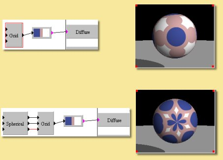 |
Jitter
| 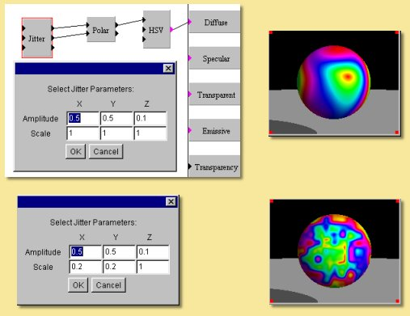 |
This
transform keeps a linear co-ordinate system but applies a random
jittering effect. Double-clicking
on the box displays a dialogue allowing control of the amplitude of the
jitter and the range over which
the jittering takes place.
In the example on the left, we have the texture used as an example
above under 'Polar'. This
ordinarily produces a set of rings of different colours. This time,
however, a jitter has been applied
to the x and y co-ordinates of amplitude 0.5. The top image shows the
effect with a scale of 1 and the
lower image shows what happens when this scale is reduced. |
Patterns
| 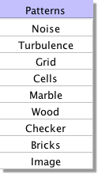 |
There
are several pre-defined texture patterns in Art of Illusion
accessible through the Patterns menu as shown on the left. Each pattern has 3
inputs for x, y and z coordinates. |
Below we will look at each colour pattern and its variations. In each
case, the output from the
pattern box has been fed into the default custom colour function and
then into the Diffuse property
box.
Noise
This module creates a fractal noise pattern using Stefan Gustavson's
implementation of Ken Perlin's Simplex noise function. For
technical details see here.
Each octave has twice
the frequency of the previous octave. You can specify the number of
octaves to use, and the amplitude of the first octave by
double-clicking on the noise box. The amplitude of each higher octave
is obtained by multiplying the amplitude of the preceding octave by the
value of the noise input port (which is typically between 0 and 1,
although this is not strictly required). Because this is an input port
rather than a parameter, it does not need to be a constant. This is
very useful for creating noise patterns whose character varies over the
surface of an object.
The noise function is scaled so that output values will typically be
between 0 and 1. Depending on the values of the parameters and the
noise input, however, the output value may sometimes go outside this
range.
Some examples are given below:
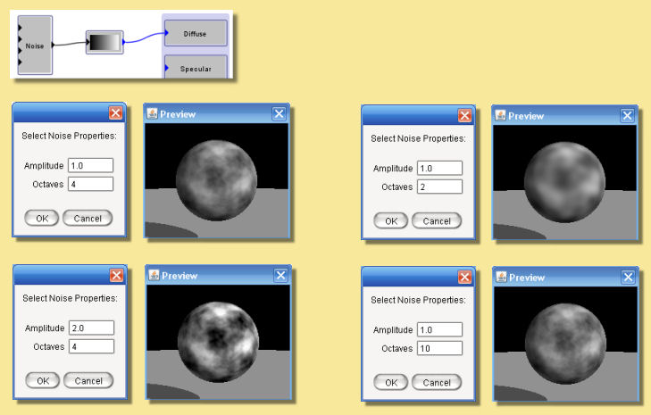
Turbulence
This module is like the Noise module, except that it takes the absolute
value of each octave of noise before adding them together. This creates
"creases" in the output where its derivative changes discontinuously.
The result is somewhat reminiscent of turbulent flows in liquids. The
noise function is scaled so that output values will typically be
between 0 and 1. Depending on the values of the parameters and the
noise input, however, the output value may sometimes be greater than 1.
Some examples are given below:
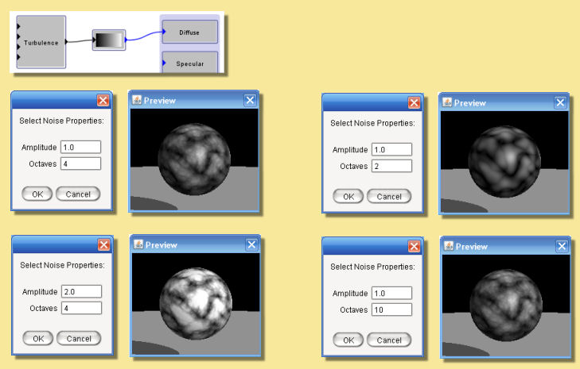
Grid
This module is useful for creating patterns that are based on a uniform
grid. It defines a uniform, three dimensional grid of "feature points".
The value at any point is equal to the distance from that point to the
nearest feature point. Double-click the module to change the spacing
between feature points. Some examples are shown below:
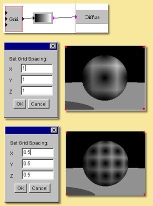
Cells
This texture pattern is similar to the grid function but, instead of
the feature points being evenly
spaced in a grid, they are positioned randomly. The Cells module box
has 3 outputs; The cell port outputs a value
between 0 and 1 which identifies the nearest feature point. This value
is the same for every point in the "cell" defined by that feature
point. This is useful for creating irregularly shaped cells, where each
cell is a different color. The distance 1 and distance
2 ports output the distance to the nearest and second nearest
feature points, respectively. Distance 1 for the
cells pattern is analagous to the grid pattern.
In addition, the distances between each point and the feature points
can be calculated using 3 mathematical
formula which result in 3 different pattern types; Euclidean, City
Block and Chessboard. The type is
selected by double-clicking the module box.
The results with each of the 3 outputs and 3 distance types for the
default custom colour function are
shown below:
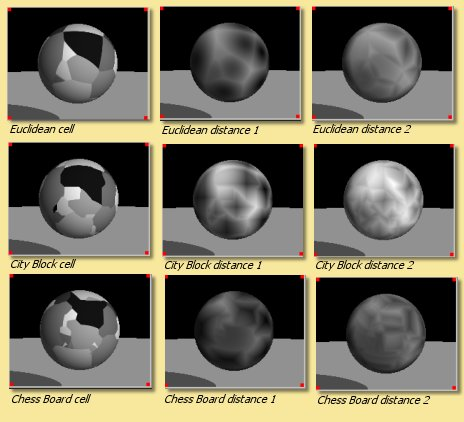
The
expression distance2-distance1 is a very useful
function:
Here, it is plugged into the default custom colour module for the
diffuse colour and emissive colour. |
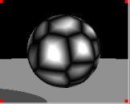 |
Marble
This is a mathematical pattern that simulates marble. In addition to
the x, y and z inputs is a noise
input. Double-clicking the module box allows the spacing of the marble
bands to be altered as well as the
noise amplitude and number of octaves. Some examples are given below:
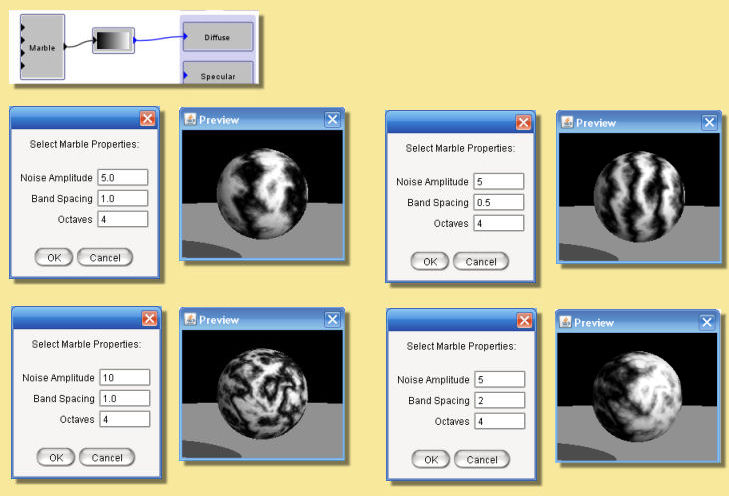
Wood
Not surprisingly, this pattern is useful for producing wood-like
textures. Its output for a given point is proportional to the distance
from the Y axis, plus a turbulence function. Double-clicking the Wood
module allows the various parameters to be altered; noise amplitude,
ring spacing and number of
noise octaves. Some examples are given below:
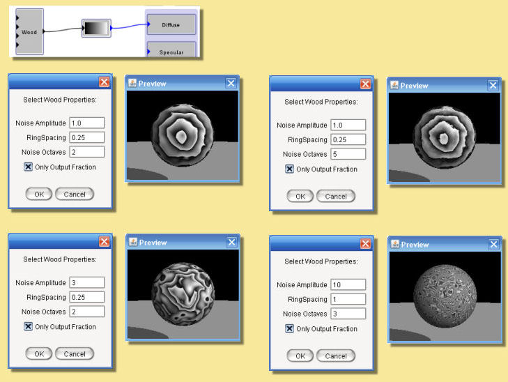
If you select the "Only Output Fraction" option, the output is taken
mod 1, so that it consists of a series of concentric rings, with the
output increasing from 0 to 1 over the width of each ring. The most
common use of this module is to send its output into a Custom color
function, which creates an appropriate series of color bands. When used
this way, it is generally best not to select the "Only Output Fraction"
option, and instead to make the color function periodic. Otherwise, the
anti-aliasing of the wood function may lead to visible artifacts.
Checker
This pattern produces the checker board pattern so often seen in 3D
computer graphic imagery. There
are no options for this pattern but the spacings can be altered by
applying scaling to the input x, y and z coordinates:
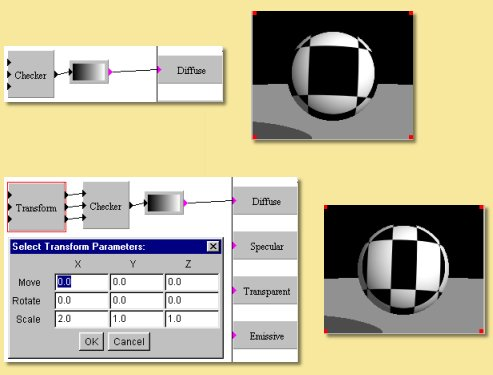
Bricks
This module produces a brick pattern with the 'bricks' having an output
value of 1 and the 'mortar' an
output of 0. Double-clicking on the module allows the brick height, gap
width and row offset to be
varied as shown in the examples below:
Image
This module allows the use of an image within the texture. As with
image mapped textures, the image
must be in either .gif, .png, .jpg, .svg, or .hdr format. The image module has
5 outputs: a colour map of the image and
4 numerical outputs corresponding to the red, green and blue components
and a Mask output which can be used
to vary surface properties based on image alpha selections/masks or
transparent image regions (see
here for more
details) .
Double-clicking
brings up the dialgue box on the right:
Clicking on the outlined square brings up a dialogue enabling you to
select or load an image.
The X-size and Y-size are the
relative sizes of the image.
The Tile and
Mirror
options allow the image to be tiled (simply repeating ad
infinitem) in either the x or y direction, or to be mirrored. In the
latter case, the images are tiled in such a way that adjacent tiles are
mirror images; this allows a seamless blend across the surface.
The Outputs
from the module can also be set to either (i) Red, Green & Blue
(RGB) (ii)
Hue, Saturation & Value (HSV)
or (iii) Hue, Lightness & Saturation (HLS) |
|
Below is an example of the image module. Because the output has been
set to RGB, the outputs from the module
are the colour and 4 numerical
outputs in the following order: Red, Green, Blue and Mask.
Here the blue stars are being given a glow by applying
the Blue output of the image module to a Color Scale module which
scales a blue Color module input to
the Emissive property box. The Red output (which is most prevalent in
the orange star) is being used to
control the Specularity and the Colour output is a straight input to
the Diffuse property.
Edit
Menu
The other menu available in the procedural texture editor is the Edit
Menu:
Undo/Redo This allows the last action to be undone
or redone.
Cut copies the currently selected modules into the
clipboard and deletes them from the procedure.
Copy copies the currently selected modules into the
clipboard without deleting them.
Paste creates new copies of any modules placed in
the clipboard by the Copy and Cut tools.
Clear deletes the currently selected module(s).
Properties This allows the antialiasing of the
texture to be altered. Normally the default
value of 1 is fine. Values greater than this will cause more smoothing
of the texture.
Use of the Preview Time
This
image illustrates the use of changing the preview time.
In this example, the height (Displacement) of the 'grass' is controlled
by the expression input1*t*0.5.
The output of this expression goes from 0 at time (t) = 0, to
0.5 at t=1 secs, 1 at t=2 secs. |
|
Example Procedural Textures
The procedural texture tool is a very powerful way of creating surface
textures. The above sections
have detailed the various modules available but these only go some way
to showing how flexible this
approach to textures can be. Most of the modules have been demonstrated
only using a simple custom
colour map plugged into the diffuse colour property. The modules can
however be used to vary any of the
colour and number properties and a wide variety of interesting textures
can be created.
Below are 3 example textures obtained using a small selection of the
available modules in slightly more
sophisticated ways. Click on the images to find out more about how they
were created.